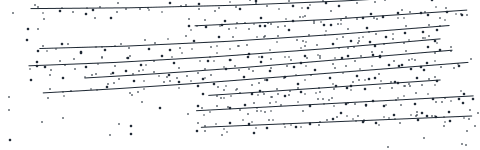
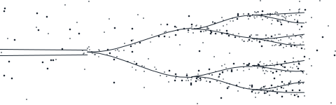

Research
Papers, essays, and the exhibits behind them. What Driftwood believes, and what it can show.
Commentary
Short observations on coordination, tax, and the moving parts — published when there is something to say rather than on a schedule.

The Driftwood Review
The quarterly. Long-form synthesis on a fixed structure — the flagship publication, not a blog.
A quarterly record of coordination decisions
Seven divisions in the same order every issue: Lead Essay, Research Notes, Tax & Planning, Market Structure, Practice Updates, Reading List, Appendix. The structure does not move, which is what makes a run of issues a record rather than a feed.
Decision Tools
Interactive reviews you can run yourself, on your own numbers, without speaking to anyone. Each one answers a single question end to end.
Decision Library
One decision, worked all the way through all seven systems. These are the moments where coordination is worth the most, because the systems move together whether or not anyone is watching them.
